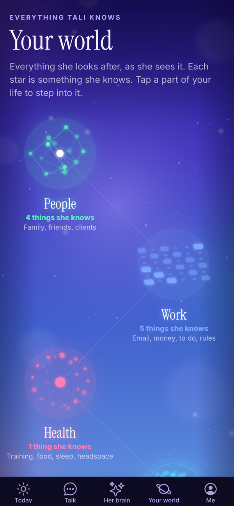
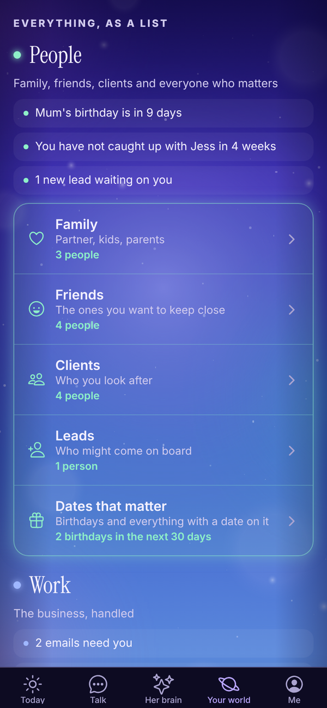

Tali HQ guide
Your world
Your whole life on one map in six parts, with what is happening in each right now and every list and tool one tap away.
Your world is everything Tali looks after, as she sees it. It is one map in six parts: People, Work, Health, Home and money, Growth and Your words. Each part opens with what is happening in it right now, from your own data, and lists everything that lives there. It fills in as you talk to Tali. Free
Tap Your world at the bottom of the app.


The map#
Each part of your life is its own moving shape, and each star in it is something Tali knows.
- People is a network on a globe.
- Work is a board.
- Health is a beating core inside two rings.
- Home and money is a tide of stars that fills and drains.
- Growth is a galaxy.
- Your words are fireflies rising.
Tap a part of the map to jump to it in the list underneath.
Everything, as a list#
Under the map, EVERYTHING, AS A LIST has a card for each part. The line at the top of a card is what is happening right now, for example "Mum's birthday is in 9 days", "A$340 owed across 2 invoices", "2 of 3 habits done today" or "A$120 left to spend this week". With nothing to say, no line shows.
Tap any row to open it. Rows your plan doesn't include show a TALI HQ or PRO tag. Tap one to see what it does.
People#
| Row | What it is |
|---|---|
| Family | Partner, kids, parents |
| Friends | The ones you want to keep close |
| Clients | Who you look after (if you run a business) |
| Leads | Who might come on board (if you run a business) |
| Dates that matter | Birthdays and everything with a date on it |
Work#
| Row | What it is |
|---|---|
| Email Tali HQ | Sorted, with replies drafted. See Gmail and Outlook |
| Invoices Tali HQ | Make, share, track. See Invoices |
| Money Tali HQ | In, owed and runway. See Money |
| Receipts Tali HQ | Ready for tax time. See Receipts |
| To do | What is on your plate. See Your lists |
| Rules Pro | What she does on her own. See Night school and Rules |
Invoices, Receipts and Rules only show if you told Tali you run a business. If you didn't, a small card says "Run a business? Add it in Settings for invoices, clients and receipts".
Health#
| Row | What it is |
|---|---|
| Food and training | Logged by chatting. See Food, training, body and headspace |
| Body | Your weight and how it is trending |
| Sleep | Sounds with a timer. See Sleep sounds |
| Headspace | Your mood across the fortnight, from your journal |
| Check ups | Doctor, dentist, scripts and when they are due |
Home and money#
| Row | What it is |
|---|---|
| Personal money Tali HQ | Spending, budget and bills. See Money |
| Life admin | Rego, insurance, renewals, warranties |
| Home | Jobs around the house and who to call |
Growth#
| Row | What it is |
|---|---|
| Goals Tali HQ | Work and personal. See Goals and weekly review |
| Habits | Small things you are building |
| Learning | What you are reading, watching or studying |
| Wins | The good stuff, kept so you can look back |
| Someday | Trips, dreams and things you want to do one day |
| Weekly review Tali HQ | What moved and what's next |
| Decisions | What you decided and why. See Decisions |
| Shut down | Two minutes, then off. See Shut the day down |
Your words#
| Row | What it is |
|---|---|
| Journal | Your time and your place. See Journal and notes |
| Notes | Things to find again |
| Ideas | Half thoughts she keeps warm for you |
| Night school Pro | What she studies for you tonight |
Fill it in by talking#
You don't have to open each screen to add things. Tell Tali in Talk and she files it in the right place:
- "Mum's birthday is 14 December."
- "Dentist every 6 months, next one in March."
- "Car rego is due 29 November, every year."
- "I want to read 20 pages a day."
- "Win: signed my biggest client yet."
- "Someday I want to take the kids to Japan."
Questions#
Why can't I see Invoices, Receipts or Rules?
Those show when you run a business. Open Me, Settings, and under Do you run a business? choose yes, then tap Save.
Where did the Clients and Journal tabs go?
They live in Your world now. People are under People, and your journal and notes are under Your words.
Parts of the map blink or disappear on my phone.
Close the app fully and open it again to pick up the latest update. If it still happens, email admintotality@gmail.com and tell us which phone you have.
Is Your world on the Free plan?
Yes. The map, your people, dates and all the lists are on every plan. Rows tagged TALI HQ or PRO need that plan.